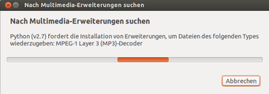
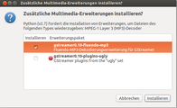
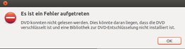
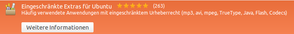

Codecs
Dieser Artikel wurde für die folgenden Ubuntu-Versionen getestet:
Ubuntu 16.04 Xenial Xerus
Ubuntu 14.04 Trusty Tahr
Zum Verständnis dieses Artikels sind folgende Seiten hilfreich:
Das Abspielen von Dateien in allen gängigen Multimedia-Formaten stellt unter Linux an sich kein Problem dar. Solange es sich um freie Standards handelt, sind diese auch direkt nach der Installation abspielbar.
Trotzdem ist bei Ubuntu z.B. die Unterstützung für das weit verbreitete MP3-Format standardmäßig nicht enthalten. Dies hat vor allem rechtliche Gründe. Insbesondere sind verschiedene Formate nicht frei und mit Lizenzgebühren sowie Nutzungseinschränkungen belegt. Das betrifft auch die Wiedergabe kommerzieller DVDs.
Nach der Installation der benötigten Codecs können selbst viele Microsoft-Formate wie z.B. .wmv oder .asf problemlos abgespielt werden.
Automatisierte Codec-Installation¶
Media-Player, die auf GStreamer aufbauen oder GStreamer-Backends nutzen, erkennen selbständig, welche Codecs beim Abspielen der Medien fehlen. Enthalten Media-Player wie Totem und Rhythmbox die entsprechende Implementierung, bieten diese die fehlenden Codecs und Bibliotheken zur automatisierten Installation an. Dabei wird zwischen freien und eingeschränkten (restricted) Codecs unterschieden. Damit haben Anwender die Wahl, ob das System entweder ausschließlich mit freier oder mit eingeschränkter Software ausgestattet werden soll.
|  |
| Codec-Suche |
|  |
| Codec-Auswahl |
Manuelle Codec-Installation¶
Werden beim Abspielen von Audio- und Videodaten fehlende Codecs festgestellt (Fehlermeldung), können diese auch mit Hilfe einer Paketverwaltung (Software-Center) gesucht und installiert werden. Die gängigsten Codecs, Flash und viele andere Formate lassen sich mit Hilfe des Metapakets ubuntu-restricted-extras installieren. Dieses enthält wiederum u.a. die Metapakete gstreamer0.10-plugins-bad-multiverse  (nur Ubuntu 14.04), ubuntu-restricted-addons und libavcodec-extra .
(nur Ubuntu 14.04), ubuntu-restricted-addons und libavcodec-extra .
|  |
| Codec-Fehlermeldung |
|  |
| Codec-Auswahl |
Unity/GNOME (Ubuntu)¶
Die GStreamer-Codecs werden in vier Kategorien aufgeteilt (base, good, ugly' und 'bad. In der Kategorie "ugly" befinden sich Codecs, die wegen ihrer Lizenz nicht zusammen mit Ubuntu ausgeliefert werden können. "bad" enthält neue Codecs, die, nachdem sie erprobt worden sind, in "base" oder "good" wandern.
Je nach Ubuntu-Version müssen folgende Pakete installiert werden [1]:
Ab Ubuntu 14.04¶
libxvidcore4 (universe, Codec für Xvid (MPEG4)-codierte Dateien)
gstreamer1.0-plugins-base (Plugins für essentielle Codecs)
gstreamer1.0-plugins-good (Plugins für Codecs, die unter der LGPL stehen)
gstreamer1.0-plugins-ugly (universe, Plugins für Formate, die wegen ihrer Lizenz nicht mit Ubuntu ausgeliefert werden können )
gstreamer1.0-plugins-bad (universe, Plugins, die möglicherweise noch im "Beta"-Stadium sind und deshalb unter Umständen nicht so stabil laufen wie Plugins aus "good" oder "ugly")
gstreamer1.0-alsa (Plugin, damit ALSA mit GStreamer genutzt werden kann)
gstreamer1.0-fluendo-mp3 (universe, Codec für MP3)
gstreamer1.0-libav (universe, Codec für diverse Videoformate, ersetzt ffmpeg ab Ubuntu 14.04)
 mit apturl
mit apturl
Paketliste zum Kopieren:
sudo apt-get install libxvidcore4 gstreamer1.0-plugins-base gstreamer1.0-plugins-good gstreamer1.0-plugins-ugly gstreamer1.0-plugins-bad gstreamer1.0-alsa gstreamer1.0-fluendo-mp3 gstreamer1.0-libav
sudo aptitude install libxvidcore4 gstreamer1.0-plugins-base gstreamer1.0-plugins-good gstreamer1.0-plugins-ugly gstreamer1.0-plugins-bad gstreamer1.0-alsa gstreamer1.0-fluendo-mp3 gstreamer1.0-libav
KDE Plasma (Kubuntu)¶
Seit Version 14.04 greift Kubuntu über Phonon auch auf GStreamer zurück, allerdings wird bereits dessen Version 1.0 verwendet. Die Installation erfolgt wie oben angegeben.
DVD-Wiedergabe¶
Die meisten der im Handel auf DVD erhältlichen Filme sind verschlüsselt und können daher direkt nach der Ubuntu-Installation nicht abgespielt werden. Um diese DVDs abspielen zu können, gibt es zwei Möglichkeiten:
Kommerzielle Programme wie ONEPLAY DVD Player (ehem. Fluendo DVD Player) und LinDVD, die den benötigten CSS-Schlüssel zur DVD-Wiedergabe mitbringen. Die Hersteller erwerben die Rechte, die für die Entschlüsselung benötigt werden.
Die Bibliothek libdvdcss. Aufgrund rechtlicher Unsicherheiten ist diese bei Ubuntu nicht vorinstalliert, was man aber nachholen kann. Die konkrete Vorgehensweise ist im Artikel DVD-Wiedergabe beschrieben.
FLAC¶
FLAC steht für „Free Lossless Audio Codec“ und ist ein gängiges und freies Format zur verlustfreien Komprimierung (durchschnittlich auf ca. 50%) von Audio-Dateien. Im Gegensatz zu den Windows-typischen .WAV-Dateien werden Metadaten unterstützt.
Fluendo¶
Weitere lizenzrechtlich geschützte Codecs für GStreamer können bei verschiedenen Shops gekauft, heruntergeladen und installiert [3] werden. Seit Version 15 unterstützt der Codec XvBA für Radeon Grafikkarten.
Es existieren Pakete für 32- und 64-bit-Architekturen:
oneplay-gstreamer-codecs-pack_VERSION_ARCHITEKTUR.deb
oneplay-gstreamer-codecs-mp3_VERSION_ARCHITEKTUR.deb
Die Liste der zur Verfügung stehenden GStreamer-Plugins kann auf der Herstellerseite eingesehen werden.
Ubuntu Software-Center¶
Das Fluendo Complete Playback Pack sowie das Fluendo Windows Media Pack können bis einschließlich Ubuntu 15.10 über das Software-Center käuflich erworben werden. Dazu ist eine Registrierung bzw. ein Zugang über Ubuntu One erforderlich, den man sich aber auch während des Zahlungsprozesses über das Software-Center anlegen kann. Die Installation geschieht automatisch. Für zukünftige Aktualisierungen wird eine neue Paketquelle hinzugefügt.
QuickTime¶
Plugin für Quicktime-Dateien (MOV u.a. Videoformate):
libquicktime2 (universe)
mit apturl
Paketliste zum Kopieren:
sudo apt-get install libquicktime2
sudo aptitude install libquicktime2
Vorbis¶
Vorbis (bzw. OGG/Vorbis) ist ein verbreiteter, verlustbehafteter Codec, welcher aber - im Gegensatz zu MP3 - frei und quelloffen ist.
Opus¶
Opus ist eine Weiterentwicklung von Vorbis und ist im Gegensatz zu diesem auch für Sprache geeignet. In der Praxis ist die Nutzung erst ab Ubuntu 12.10 möglich, da das Nachrüsten bei älteren Ubuntu-Versionen schwierig ist.
w32/w64codecs¶
Der Einsatz dieser Pakete ist inzwischen obsolet. Warum das so ist, erklärt die Anleitung Install w32codecs/w64codecs through apt-get? .
Problembehebung¶
Xine/KDE¶
Alte KDE-Programme, welche ausschließlich auf die Xine-Engine basieren und daher GStreamer nicht verwenden, unterstützen keine automatisierte Codec-Installation. Hier muss man nach wie vor die entsprechenden Codecs über die Paketverwaltung installieren. In manchen Fällen kann es vorkommen, dass Programme (wie Kaffeine) bestimmte Inhalte, wie MP3-Dateien, trotz korrekt installierter Codecs nicht (mehr) wiedergeben. Hier könnte eine kaputte Datei ~/.xine/catalog.cache im Homeverzeichnis schuld sein, in der die für Xine verfügbaren Codecs gepuffert werden. In diesen Fällen sollte es ausreichen, die Datei zu löschen. Nach dem erneuten Start der betroffenen Programme wird die Datei neu erzeugt.
Keine M4A-Wiedergabe mit GStreamer-basierten Anwendungen¶
In manchen Fällen kann es vorkommen, dass Anwendungen, die auf GStreamer basieren (z.B. Totem, Banshee oder Rhythmbox), bestimmte Inhalte wie M4A-Dateien trotz korrekt installierten Codecs nicht wiedergeben. Hier könnte eine alte Registry-Datei in ~/.gstreamer-0.10/ schuld sein, in der die für GStreamer verfügbaren Codecs gepuffert werden. In diesen Fällen sollte es helfen, die Dateien zu löschen [4]:
rm -f ~/.gstreamer-0.10/registry*
Nach dem erneuten Start der betroffenen Programme wird die Datei neu erzeugt, und das Problem sollte verschwunden sein.
Links¶
Codec – Wikipedia
Containerdatei – Wikipedia
Brother Johns Encodingwissen
 - Hintergrundinformationen
- HintergrundinformationenRestricted Formats
- Weitere Informationen, u.a. zur Wiedergabe von DVDsEasy Codec Installation
- Informationen im Wiki von Ubuntu
Nero AAC Codec
- Kommandozeilenprogramm für Windows und Linux
- Erstellt mit Inyoka
-
 2004 – 2017 ubuntuusers.de • Einige Rechte vorbehalten
2004 – 2017 ubuntuusers.de • Einige Rechte vorbehalten
Lizenz • Kontakt • Datenschutz • Impressum • Serverstatus -
Serverhousing gespendet von